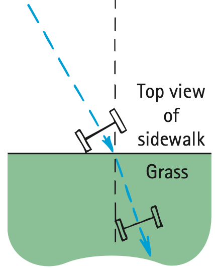
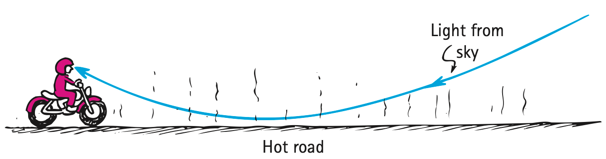
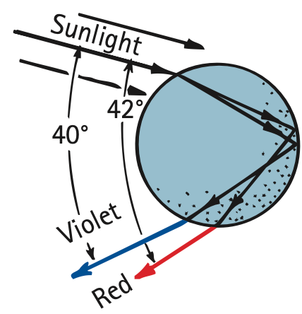
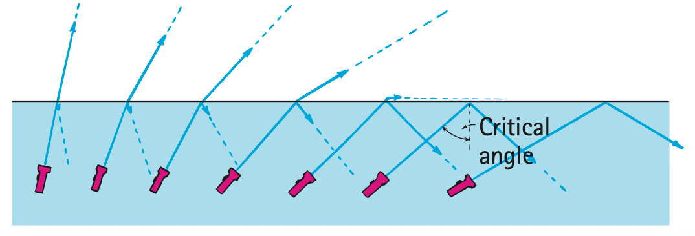

Refraction and Total Internal Reflection
Mathematical idea: Refractive index, Snell’s law, and critical angle connect ray direction to how fast light travels in different media.
You will use wheel, wavefront, prism, raindrop, and fiber models to connect what light does at a boundary to changes in speed.
Learning Target
Students will explain refraction as bending caused by changes in light speed and use this idea to analyze optical illusions, dispersion, rainbows, and total internal reflection.
I can statements
- I can explain that light bends when it changes speed entering a different medium at an angle.
- I can predict whether light bends toward or away from the normal.
- I can explain why objects can appear shifted or bent in water.
- I can explain dispersion as separation of colors caused by different amounts of refraction.
- I can describe total internal reflection and the conditions needed for it.
- I can connect total internal reflection to optical fibers and other applications.
Vocabulary
These are words you will see in this section. Do not define them yet.
- refraction
- normal
- index of refraction
- Snell’s law
- mirage
- dispersion
- critical angle
- total internal reflection
- optical fiber
Use the preview activity to decide which words you already know, recognize, or do not know yet. Watch for these words in bold when they are first introduced or defined in the reading.
Preview: Skim Before You Read
Directions
Before reading closely, skim the vocabulary list and the section. Look at titles, headings, bold words, pictures, captions, diagrams, tables, and formulas. Do not try to understand everything yet. Your job is to notice what already looks familiar and make predictions about what this section may explain.
Step 1 — Sort the vocabulary. Write each vocabulary word in the column that best matches what you know right now. You may move a word later.
| Know for sure | Recognize | Don’t know yet |
|---|---|---|
Step 2 — Skim the section. Record what catches your attention before you read closely.
| What I noticed | |
|---|---|
| What I predict | |
| What I wonder |
Content: Read, Look, Annotate, Apply
Directions
Read in short chunks. Annotate the prose and the figures together: underline evidence, circle or highlight bold vocabulary, label arrows or measured features, connect a sentence to an image, and write short questions or connections in the margins.
Reading 1: A Speed Change Can Turn a Ray
Light travels at different average speeds in different transparent materials. When a light ray crosses a boundary at an angle and changes speed, its direction can change. This bending is refraction. The reference direction is again the normal, a line perpendicular to the boundary.

Image read: Mark which wheel reaches the grass first. Explain why that side slows first and turns the axle toward the normal.
The cart-wheel model makes the turning mechanism visible: one side changes speed before the other. A light wave behaves similarly when one part of a wavefront enters a slower medium first. The ray remains perpendicular to the wavefront, so the change in the wavefront orientation produces a change in ray direction.

Image read: Trace one wavefront before and after it reaches the water. Mark the portion that slows first and connect that to the bent blue ray.

Image read: Write “slower” on the side where the ray bends toward the normal and “faster” on the side where it bends away.
When light slows as it enters a medium at an angle, it bends toward the normal. When it speeds up leaving that medium, it bends away from the normal. If it strikes along the normal, both sides of the wavefront change speed together and the ray does not change direction.

Image read: Compare the actual fish position with the apparent position. Trace why the observer extends the refracted ray backward in a straight line and therefore locates the fish too shallow.
Stop and Discuss
- Use either the cart-wheel or wavefront model to explain why refraction requires a speed change across the wave at different times.
- Why does a submerged object often appear closer to the surface than it really is? Use the observer’s backward line-of-sight interpretation.
Example 1: Air into glass
A ray travels from air into glass at an angle to the normal and slows down.
- Predict whether it bends toward or away from the normal.
- Explain the prediction using the speed-change model.
You Try It 1: Straight through the normal
A ray enters a slower transparent medium exactly along the normal.
- Does its speed change?
- Does its direction change? Explain why these answers are not contradictory.
Reading 2: Index, Snell’s Law, and Real Mirage Paths
The amount that light slows in a transparent material is summarized by the index of refraction, $n$. A larger index means light travels more slowly in that material. Vacuum has $n=1$, while glass, water, and diamond have larger values.
The quantitative relationship between the incoming and refracted angles is Snell’s law. The angles are measured from the normal, just as in reflection. When the indices and one angle are known, the relationship can predict the other angle.

Image read: Label the two media, two indices, normal, and two angles. Check that both angles begin at the normal line.
Refraction does not require a solid boundary. Air at different temperatures can have slightly different optical properties, so light paths can curve gradually through layers of air. A hot road produces strong temperature differences near the ground.

Image read: Trace the real light path from the sky to the observer. Then extend the final ray backward to see why the eye interprets the light as coming from the road.
A mirage is therefore produced by real refracted light, not by imaginary water. Mirages can be photographed because the light paths are real. The apparent “wet” region is sky light reaching the eye along a curved refracted path.
Stop and Discuss
- What does a larger index of refraction tell you about light speed in a material?
- Use the mirage diagram to explain why the observer can see sky light while looking downward toward a hot road.
Index of refraction:
$$n=\frac{c}{v}$$$c$ is light speed in vacuum and $v$ is light speed in the material.
Snell’s law:
$$n_1\sin\theta_1=n_2\sin\theta_2$$Angles are measured from the normal. Use the relationship to connect speed/index differences with bending direction.
Example 2: Find an index
Light travels through a material at $2.0\times10^8\text{ m/s}$. Use $c=3.0\times10^8\text{ m/s}$.
- Determine $n$ using $n=c/v$.
- Compared with vacuum, is light faster or slower in this material?
You Try It 2: Which way should the ray bend?
Light travels from a material with $n_1=1.50$ into a material with $n_2=1.00$ at a nonzero incident angle.
- Which medium has the greater light speed?
- Without solving Snell’s law numerically, predict whether the ray bends toward or away from the normal.
Reading 3: Dispersion Turns White Light Into a Spectrum
In a transparent material, different visible frequencies can travel at slightly different average speeds. Because they do not all slow by exactly the same amount, the colors do not all refract by exactly the same amount. The separation of white light into colors arranged by frequency is dispersion.

Image read: Compare the red and blue paths through the prism. Mark which color changes direction more.
A prism makes dispersion easy to see because the light refracts at two nonparallel surfaces. Violet travels slightly more slowly than red in ordinary glass and therefore is deviated more strongly.

Image read: Follow one incoming sunlight ray through the drop. Number the first refraction, internal reflection, and final refraction.
A rainbow combines refraction, dispersion, and internal reflection inside many water droplets. Each individual drop disperses the sunlight, but an observer receives a concentrated color from a particular viewing geometry.

Image read: Identify which drop sends red light to the observer and which sends violet. Explain why one drop does not send every visible color into the same eye at the same time.
The colors are not painted onto the sky. They were already present as frequency components of the incoming sunlight. The droplets separate and redirect them so different colors reach the observer from different parts of the rain region.
Stop and Discuss
- Use the prism figure to explain why dispersion requires different colors to refract by different amounts.
- Use the raindrop figures to list the sequence of wave behaviors needed to produce a primary rainbow.
Example 3: White light through a prism
White light enters a glass prism. Red and violet emerge along different paths.
- What wave behavior separates the colors?
- Why does a speed difference inside the glass matter for the amount of bending?
You Try It 3: Critique the painted-rainbow claim
A student says, “Raindrops create new red, orange, yellow, green, blue, and violet light.”
- Identify the misconception.
- Use dispersion and the diagrams to write a corrected explanation.
Reading 4: When Refraction Gives Way to Total Internal Reflection
When light inside a higher-index material approaches a boundary with a lower-index material, some light can refract out and some can reflect back. As the internal angle increases, the refracted ray moves closer to the boundary. The critical angle is the minimum internal incident angle at which the refracted ray would just graze the boundary.

Image read: Follow the sequence from small to large incident angle. Mark where the refracted portion shrinks to zero and reflection becomes complete.
For angles greater than the critical angle, all the light remains in the original material. This is total internal reflection. It requires light to travel from a higher-index (slower-light) medium toward a lower-index (faster-light) medium. Merely striking a boundary at a large angle is not enough if the direction of travel is reversed.
Prisms can use total internal reflection to redirect light very efficiently, and diamonds can trap and redirect many rays internally. A particularly important application is the optical fiber, a thin transparent guide designed so rays repeatedly meet its boundary under total-internal-reflection conditions.

Image read: Trace one ray through a curved fiber. At each bounce, check that the ray stays inside rather than crossing the boundary.
Optical fibers can carry light through bends and into inaccessible locations, as well as carry communication signals. The light can follow the fiber because each internal boundary redirects it back into the guiding material.
Stop and Discuss
- State both conditions needed for total internal reflection: the direction of the index change and the size of the incident angle.
- Use the fiber figure to explain why light can follow a curved path even though it travels in straight segments between boundary interactions.
For light traveling from a higher-index medium $n_1$ to a lower-index medium $n_2$:
$$\sin\theta_c=\frac{n_2}{n_1}$$$\theta_c$ is the critical angle. Total internal reflection occurs for internal incident angles greater than $\theta_c$ under this high-index-to-low-index condition.
Example 4: Is TIR possible?
Light is inside glass with $n_1=1.50$ and meets an air boundary with $n_2=1.00$.
- Does the direction of travel meet the high-index-to-low-index requirement?
- Use the critical-angle relationship to estimate whether $\theta_c$ is greater or less than $45^\circ$; then explain what would happen for an incident angle well above the critical angle.
You Try It 4: Wrong-direction fiber claim
A student says, “Any ray entering glass from air at a large angle must undergo total internal reflection immediately.”
- Identify the missing condition.
- Rewrite the claim so it correctly describes when total internal reflection can occur.
Vocabulary: Define the Terms
You have now seen these words in the reading, images, and practice. Use this table to consolidate the physics meaning of each term.
| Vocabulary term | Definition |
|---|---|
| refraction | Bending of light caused by a change in average light speed as it enters a different medium at an angle. |
| normal | A line perpendicular to a boundary at the point where a ray meets it. |
| index of refraction | A number $n=c/v$ that compares light speed in vacuum with light speed in a material. |
| Snell’s law | The relationship $n_1\sin\theta_1=n_2\sin\theta_2$ connecting indices and ray angles across a boundary. |
| mirage | An image-like appearance produced by real light refracting through layers of air with different optical properties. |
| dispersion | Separation of light into colors because different frequencies refract by different amounts. |
| critical angle | The minimum internal incident angle associated with the transition to total internal reflection for high-index to low-index travel. |
| total internal reflection | Complete reflection back into a higher-index material when the internal incident angle is greater than the critical angle. |
| optical fiber | A transparent light guide that uses repeated total internal reflection to direct light along its length. |
Summary
- Refraction is a direction change caused by a light-speed change at a boundary; slowing bends toward the normal and speeding bends away.
- $n=c/v$ describes how strongly light is slowed in a material, and Snell’s law connects refractive indices with ray angles.
- Apparent depth and mirages are real consequences of refracted ray paths.
- Dispersion separates colors because different frequencies refract by different amounts; rainbows combine dispersion, refraction, and internal reflection.
- Total internal reflection requires travel from higher index to lower index and an internal incident angle greater than the critical angle.
- Optical fibers guide light by repeated total internal reflection.
Common Mistakes
| Mistake | Why it is tempting | Check instead |
|---|---|---|
| “Light bends because it wants the shortest path.” | A bent path can look purposeful. | Use the speed-change/wavefront model; refraction follows from different average speeds. |
| “Higher index means faster light.” | A larger number sounds like more speed. | Use $n=c/v$: larger n means smaller v. |
| “A mirage is imaginary water.” | The road looks wet. | Trace the photographed real sky-light path through warm air. |
| “Any large angle causes total internal reflection.” | The critical-angle idea emphasizes angle. | Check direction too: light must be inside the higher-index medium moving toward lower index. |
What is the term for complete reflection back into a higher-index material when the internal incident angle exceeds the critical angle?
A ray moves from glass into air at a nonzero angle and speeds up. Predict whether it bends toward or away from the normal and explain why.
What is one thing you learned in this section? Explain it in at least one complete sentence.
What is one thing from this section you still need to understand or practice more? Be specific.